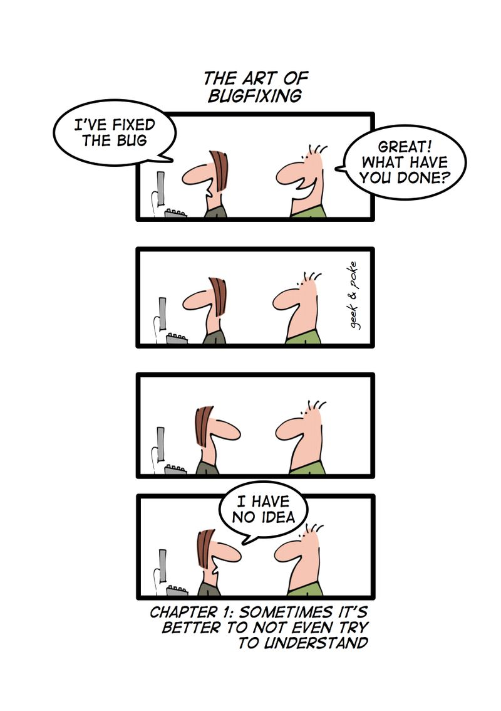

Holding Data
{kind=link}
Up to this point, every time we saved a piece of information (a number, string, an object …) into a variable, it has always been a single piece of information and we have saved it into one single variable. This makes good sense for many things but sometimes it is very inconvenient. If I asked you to save the final mark for every student in this class, we would have to create a variable for every student in this class to hold their mark. Recreating these variables over and over again, should be the clue that there is a better way of doing this. Another problem is the program would only be useful for a class that had that exact same number of students, not very likely to occur often. We might also want to save different peices of information about the students, like grade, courses taken. Each of these peices of information are related to a single student, how would we handle that kind of situation?
To solve these problems, there are several different type of data structures we can use, besides just a single variable like we have been using up to now.